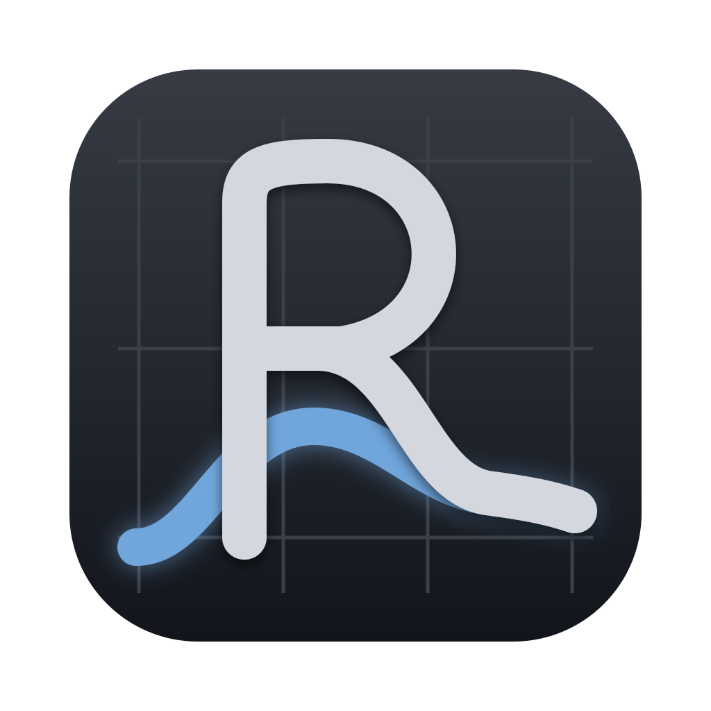
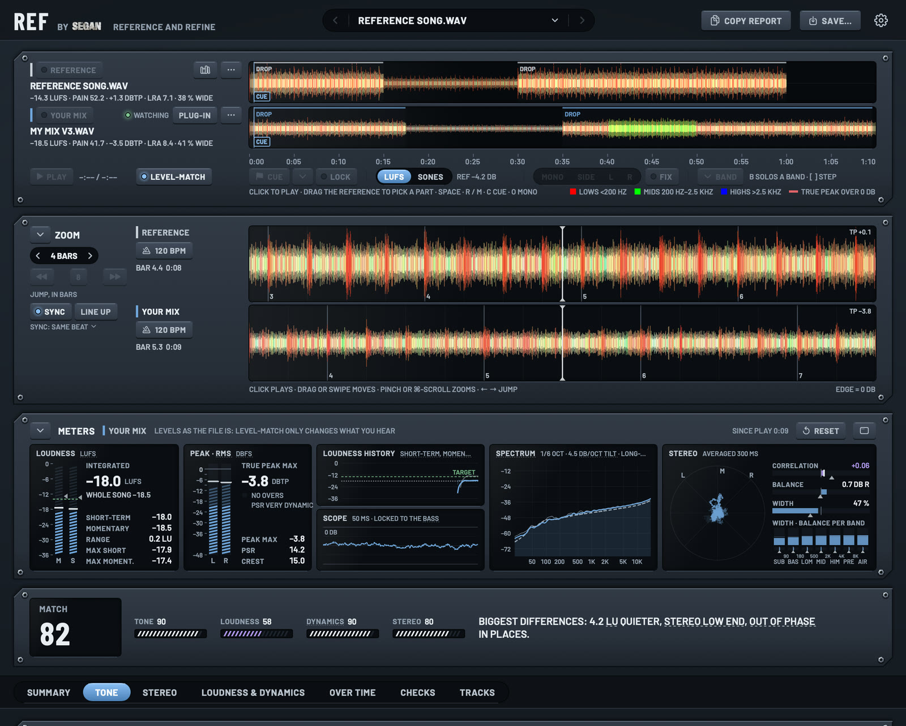
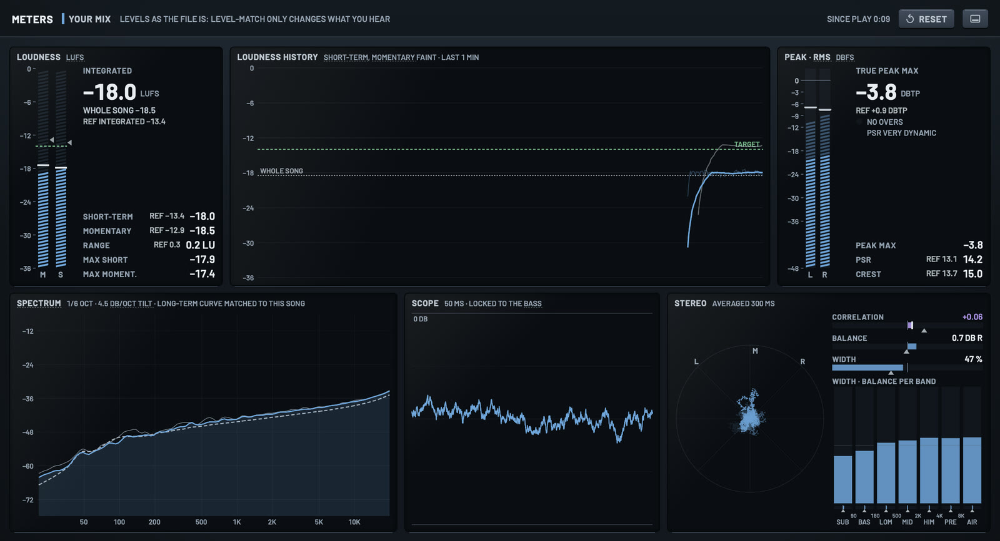

REF
Reference and refine.
Drop in a reference song and a bounce of your mix. REF measures both the way mastering tools do, then tells you in plain English what to change so your track sounds like the reference: EQ moves, loudness, dynamics and stereo. Bounce again and it checks the new mix by itself.

Plain-English advice
The biggest differences first, with up to five EQ moves to close them and a 0–100 match score. Straight from the measurements, so the same two files always get the same advice. No AI.
Watches your bounces
Bounce over the same file and REF measures it again by itself, then shows what moved: the score before and after, and what you fixed since last time.
Reference sets
Drop several songs on Reference to aim for their average instead of one song's quirks. The range they span is shaded on the charts, and anything inside it counts as a match. Save sets to use again.
Waveforms and A/B
Both songs' waveforms on one clock, in RGB like rekordbox and Traktor: lows red, mids green, highs blue, mixed into a colour for every moment, so kicks, bass and hats stand out from each other. Click to play, then flip between them with R and M, level-matched so louder never sounds better.
Live meters
Loudness, true peak, PSR, a scope, a goniometer, width per band and a spectrum with the reference's curve over it, for whichever song you hear. Fold them away or give them their own window.
Your look
Steel by default, or Midnight, Carbon or Warehouse amber. Dark, light or match the Mac, with gritty, brushed or clean steel.

The first time you open it
REF is an early build that Apple hasn't checked yet, so macOS asks you to approve it once. After that it opens normally, and updates install without asking again.
- Open REF.dmg and drag REF into Applications.
- Open REF from Applications. macOS says it can't verify it: click Done.
- Open System Settings › Privacy & Security, scroll to the bottom, click Open Anyway next to “REF was blocked”, and confirm with your password.
On macOS 14 Sonoma you can instead right-click REF in Applications, choose Open, then Open again.
The REF plug-in on a Mac
REF comes with a plug-in for your DAW, Audio Unit and VST3: REF's whole window on your master bus. On its own it's a meter: loudness, peaks, spectrum and stereo as your DAW plays. Drop a reference on it, play your song and stop, and REF measures the pass against the reference. A/B them through your DAW, level-matched.
- In REF, click Install the REF plug-in (or open Settings › Plug-in). It replaces REF Send.
- Restart your DAW and put REF last on your master bus.
When REF updates, it updates the plug-in too: restart your DAW to load the new version. Settings › Plug-in can turn that off.
On Windows
REF for Windows is an early test, newer than the Mac version and not signed yet, so Windows asks you to approve it once. It comes with the REF plug-in for your DAW: REF on your master bus, measuring each pass you play.
- Run the REF Setup file you downloaded. Windows says “Windows protected your PC”: click More info, then Run anyway.
- Click Yes to let it install. REF goes in the Start menu, and the REF plug-in in Common Files\VST3, where every DAW looks for plug-ins. It replaces REF Send.
- Open REF from the Start menu. In your DAW, rescan VST3 plug-ins and put REF last on your master bus.
REF for Windows checks for a new version once a day and asks before installing it. Settings › About › Check for updates looks now.
Or install from Terminal
One line that downloads REF into Applications and opens it, with no warning to approve:
curl -fsSL https://samsegan.github.io/ref/install.sh | bash
What it measures
- Loudness: integrated, short-term and momentary LUFS, and loudness range.
- Peaks and dynamics: true peak, PLR, PSR and crest factor. True peak is judged against the reference, so a clipped master isn't flagged when your reference is just as hot.
- Tonal balance, band by band, at the same loudness.
- Stereo: width and correlation in each band, and how the mix holds up in mono.
All of it across the whole song and over time, with charts of where the two differ. A looped chorus or a section you bounced is compared with the reference's loudest stretch of the same length.
No reference to hand? Drop in your mix on its own and REF checks it against the streaming services' targets.
Updates
REF checks for a new version once a day and offers it when there is one. If you're in your DAW at the time, it waits: an Update button shows at the top of the REF window instead. Choose REF › Check for Updates… to look now. Turn on Install updates automatically in REF › Settings › Updates to have them download by themselves and install when REF quits, or straight away with Restart to Update.